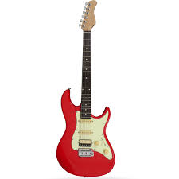

Elektro gitar veya elektronik gitar, sesini manyetikleri aracılığı ile elektrik akımına dönüştüren ve bir amplifikatör ile bu akımdan ses elde edilmesine olanak tanıyan gitar türüdür. Oluşturduğu sinyalin değiştirilebilir olması ve zamanında bir devrim niteliği taşıyan yükseklikte bir sese sahip olması nedeniyle, kullanım alanı çok genişlemiş bir gitar türüdür. Elektronikteki gelişmeler ile tonal olarak sınırları 1960'lı yıllardan özellikleri ve çeşidi artan elektro gitarlar, özellikle 1980'li yılların başlarından itibaren üretilen süperstrat modeller başta olmak üzere günümüzün en bilindik enstrümanlardan biri haline gelmiştir.
